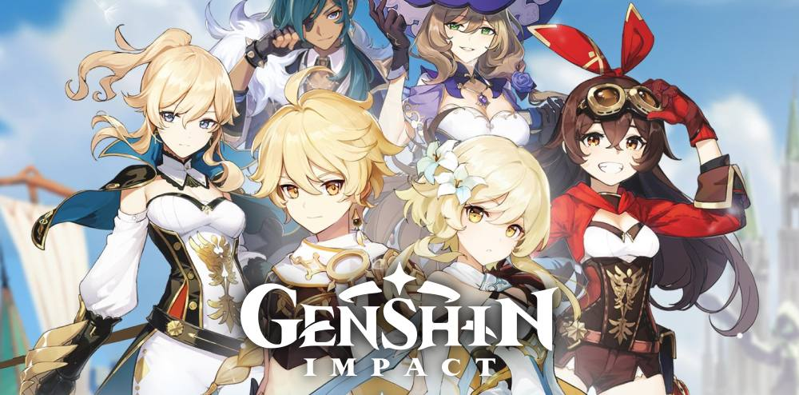
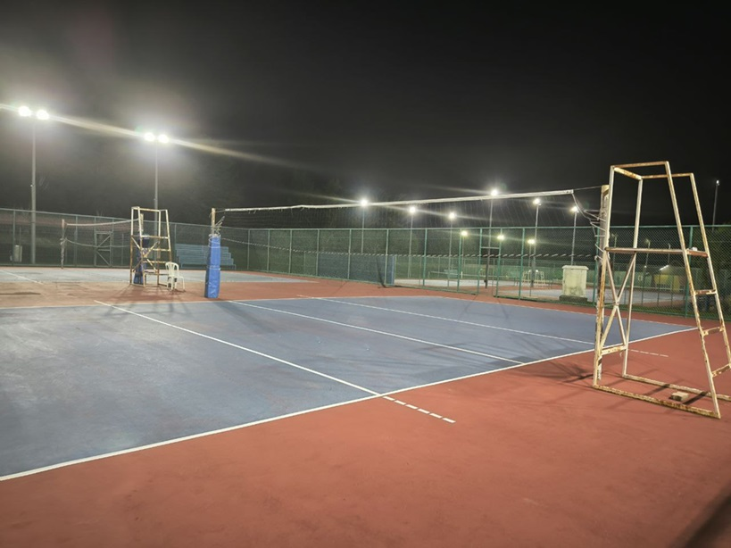

My Hobbies
Playing Games
I love immersing myself in the worlds of Genshin Impact and Honkai Star Rail. These games offer a unique blend of action, adventure, and strategy, keeping me engaged and entertained. The beautiful graphics and captivating storylines provide a perfect escape from daily life.
Volleyball
Volleyball is my favorite sport, and I play as a middle player. It helps me stay fit and active, and I enjoy the teamwork and coordination involved. Playing volleyball is not only a great way to stay healthy but also a fantastic way to meet new people and make friends.